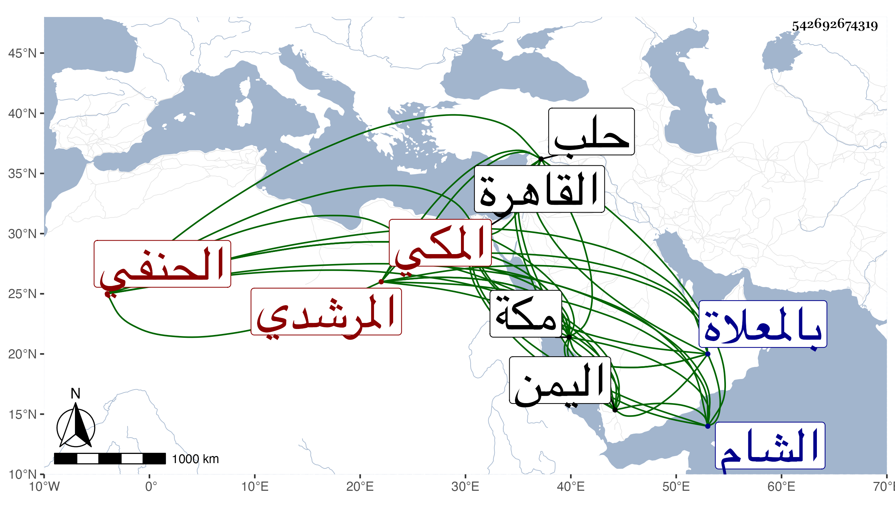

0902Sakhawi.DawLamic.ITO20230111-ara1.EIS1600.542692674319
Biography ID: 542692674319
835
محمد بن محمد بن إبرهيم بن أحمد بن أبي بكر بن عبد الوهاب بن أحمد الكمال أبو الفضائل بن الجمال أبي المحاسن المرشدي ثم المكي الحنفي سبط الكمال الدميري ، أمه أم حبيبة والماضي أبوه وأخو عبد الأول وعمهما عبد الواحد وهو بكنيته أشهر ، ولد في نصف ذي القعدة سنة ست وتسعين وسبعمائة بمكة ونشأ بها فقرأ القرآن وتلا به لأبي عمرو على أبي بكر السكندري زريق والمجمع وعرضه على أبيه وعمه عبد الواحد والقاضي على الزرندي واشتغل في الفقه على أبيه وعمه وبالقاهرة على العز عبد السلام البغدادي وآخرين وفي النحو على أبيه وتردد إلى القاهرة وإلى الشام حلب فما دونها وكذا دخل اليمن وكان أبوه قد إعتنى به في صغره وأحضره في أول شهر من عمره فما بعده فكان ممن حضر عليه الشمس بن سكر وأحمد بن حسن بن الزين ، وهو ممن سمع عليه ابن صديق وأبو الطيب السحولي والشهاب بن مثبت والزين المراغي وآخرون ، وأجاز له جده الكمال والعراقي والهيثمي وغيرهم ، وخرج له صاحبنا ابن فهد فهرستا لخصته ، وحدث سمع منه الفضلاء ولقيته بمكة في المجاورة الأولى فقرأت عليه أشياء ، مات في أواخر ربيع الأول سنة إحدى وستين وصلي عليه ضحى عند باب الكعبة ودفن بالمعلاة عند أسلافه بالقرب من الفضيل بن عياض رحمه الله .
